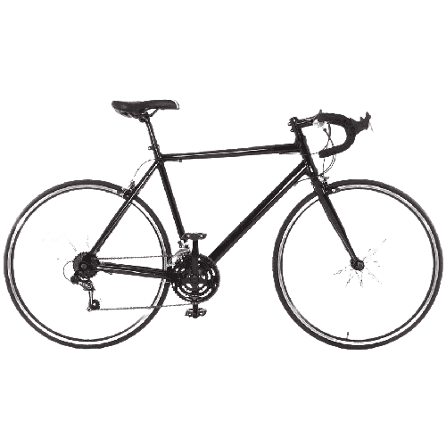
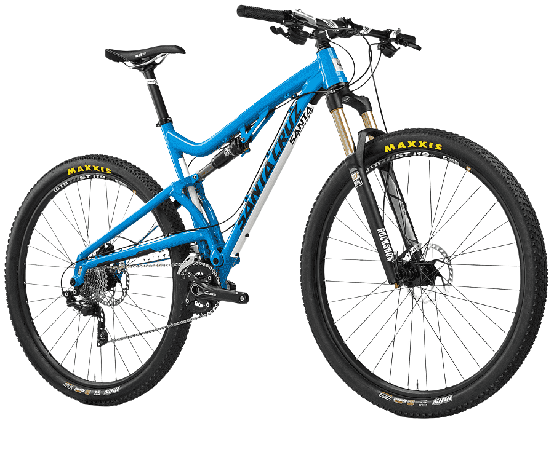
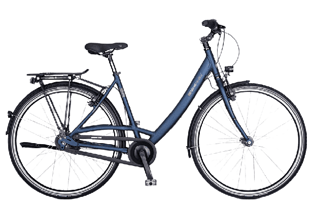
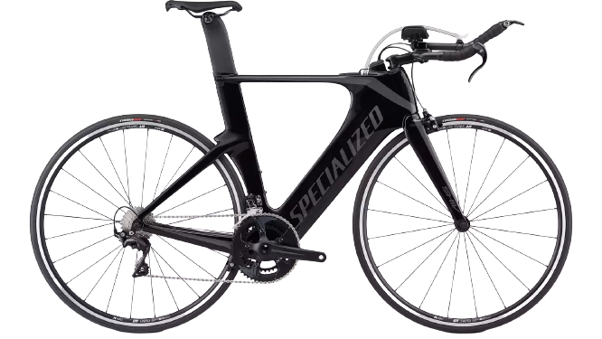

O ciclismo é um esporte popular no Brasil, com praticantes em todas as regiões do país. O ciclismo de estrada, mountain bike e ciclismo urbano são algumas das modalidades mais praticadas no país. O ciclismo de estrada é a modalidade mais popular entre os atletas profissionais, com diversas competições realizadas em todo o país, como a Volta Ciclística de São Paulo e a Volta do Rio. O mountain bike também tem ganhado popularidade nos últimos anos, com a realização de competições nacionais e internacionais, como a Brasil Ride e a CIMTB. Além disso, o ciclismo urbano tem se tornado cada vez mais comum em cidades brasileiras, com a expansão de ciclovias e incentivos governamentais ao uso da bicicleta como meio de transporte. O ciclismo também é uma forma popular de exercício físico e lazer, com muitos ciclistas pedaleando em grupos e participando de passeios ciclísticos em todo o país.

Bicicleta de estrada: projetada para competições de ciclismo de estrada, com um quadro leve e aerodinâmico, pneus finos e pressão alta e guidão curvo.

Bicicleta de montanha: projetada para uso em trilhas e terrenos acidentados, com suspensão dianteira e/ou traseira, pneus mais largos e cravados para tração e um quadro resistente.

Bicicleta urbana: projetada para uso em cidades, com um quadro mais resistente, pneus mais largos para absorção de impactos, sistema de marchas para enfrentar subidas e descidas e equipamentos de segurança, como farol e campainha.

Bicicleta de triathlon: projetada para competições de triathlon, com um quadro aerodinâmico, guidão de triatlo, roda traseira de disco e pneus finos e pressão alta
 Redator:
Redator: